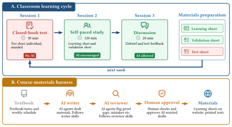

Test-Driven, AI-Assisted.
TDAA is a learning design for the AI era: students may use AI to prepare, but a frequent closed-book gate asks whether they can use the ideas unaided. AI lowers the cost of patient explanation; the gate keeps the grade tied to your own understanding.
The problem
Lectures can make learning look more active than it really is. A teacher explains clearly, students sit quietly, and the class still leaves many students unable to solve problems on their own. Active learning, peer instruction, and flipped classrooms all point to the same lesson: students learn more when they have to use ideas rather than only hear them.
Generative AI makes the old problem more urgent. AI can answer questions, explain concepts, and produce text — which lowers the cost of patient, individualized feedback, but also weakens a familiar signal of learning. If students use AI for homework or take-home projects, the submitted work may no longer show what the student personally understands.
How can a course give students a clear path to independent performance, check that performance often and seriously, and keep instructor-side workload feasible?
The model
TDAA pairs two coupled parts. Either alone would fail; together they carry each other.

-
A strict, frequent gate
Students demonstrate unaided understanding weekly instead of waiting for a final. A weekly closed-book test — no AI, notes, books, or internet — gives a concrete target and a predictable signal of where each student stands. The retrieval-practice literature confirms what the design relies on: tests do not only measure learning, they support it.
-
An AI-assisted production harness
Without an agent layer, weekly aligned testing is not operationally feasible for a single instructor. The harness uses AI agents to draft learning sheets, generate and review tests, mark papers, and repair mistakes — always under human approval. AI operates on the production side; it never appears at the closed-book gate.
The coupling is the point. The gate makes preparation honest; the harness makes the gate sustainable.
What students see each week
Three artifacts, all aligned to the same scope:
The validation set is the livability feature. Students reduce test pressure by working it openly before the closed-book session — scope is predictable, the threshold is explicit. The 100-of-130 cap means full credit does not require a perfect paper: two missed questions still leave a perfect grade, which keeps the gate strict without making it cruel.
For the student week-to-week workflow on this course, see the student guide.
What instructors produce
Each week needs a learning sheet, a test, an alternative test B, and a validation sheet — four documents per week, plus grading. Across a 13-week term, that's roughly 40 aligned bundles. No instructor can keep that consistent by hand.
TDAA-Go solves the production side with a three-stage pipeline, anchored to the course textbook:
-
AI writer
Drafts the learning sheet against the textbook scope, then generates the test, test B, and validation set from the finalized sheet.
-
AI reviewer
Challenges the draft: do tests stay inside the learning sheet's scope? Are all terms defined before use? Are AI prompts broad enough?
-
Human approver
The instructor makes the final call before anything reaches students. Nothing ships unreviewed.
The instructor's guide covers preparation, the weekly rhythm, the review habit, and risks to watch. For the machine recipe — install, fork, bootstrap, generate, build, publish, iterate, grade — see the harness setup guide.
Read the instructor's guide →Where it came from
TDAA was first implemented in DSAA 3071, Theory of Computation at HKUST(GZ) in Spring 2026 — a 13-week run that produced the worked example every default in this template traces back to. The methodology paper documents the run, the harness, the student survey, and the limits of the design.
Jin-Guo Liu, Shang-Qi Lu, Xin-Ran Shi, Long-Li Zheng and Wei Wang. High-Frequency Test-Driven Learning with AI: Making Strict Quality Gates Acceptable and Scalable. DSAA 3071, HKUST(GZ), Spring 2026.
The template repository — document templates, build commands, and the AI-assisted skills that make up the harness — is GiggleLiu/TDAA-Go on GitHub.